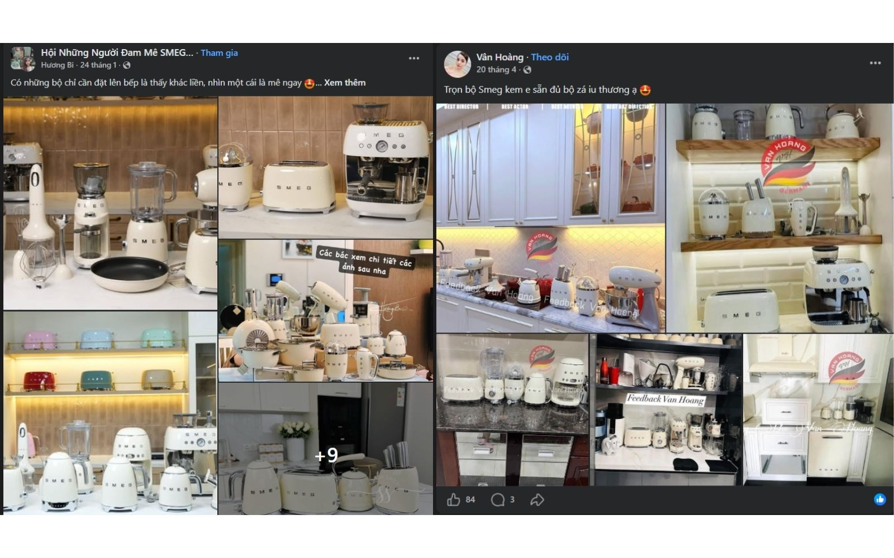
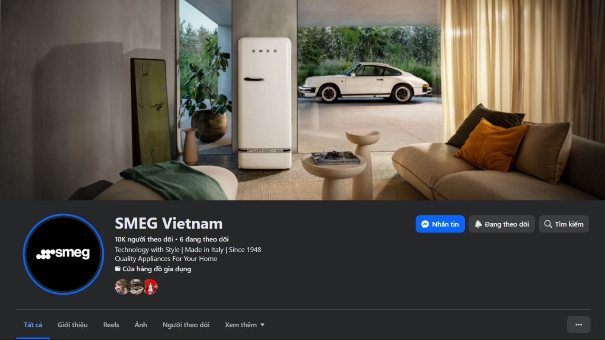
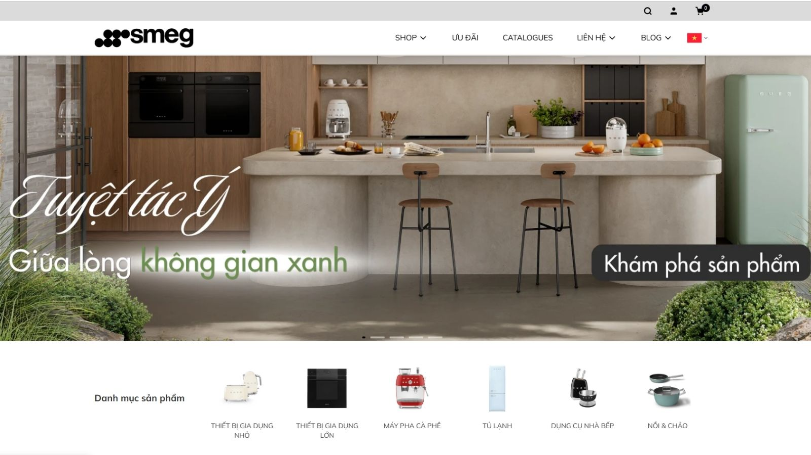
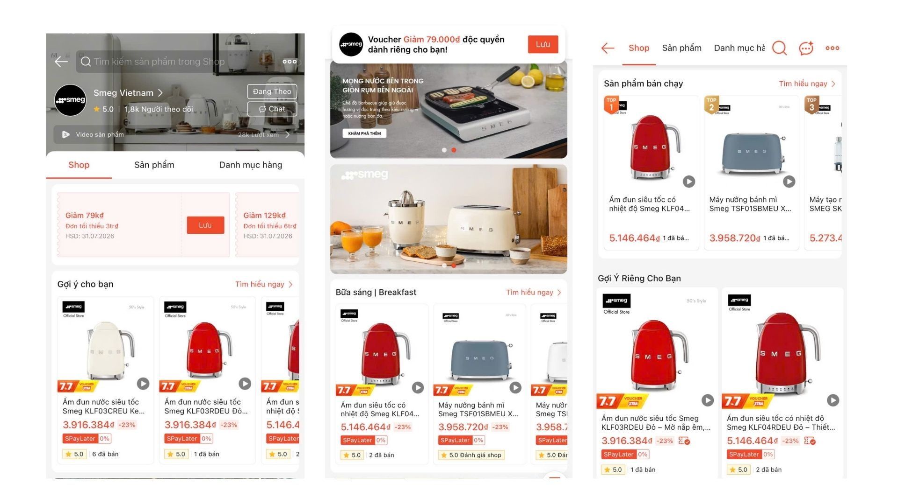
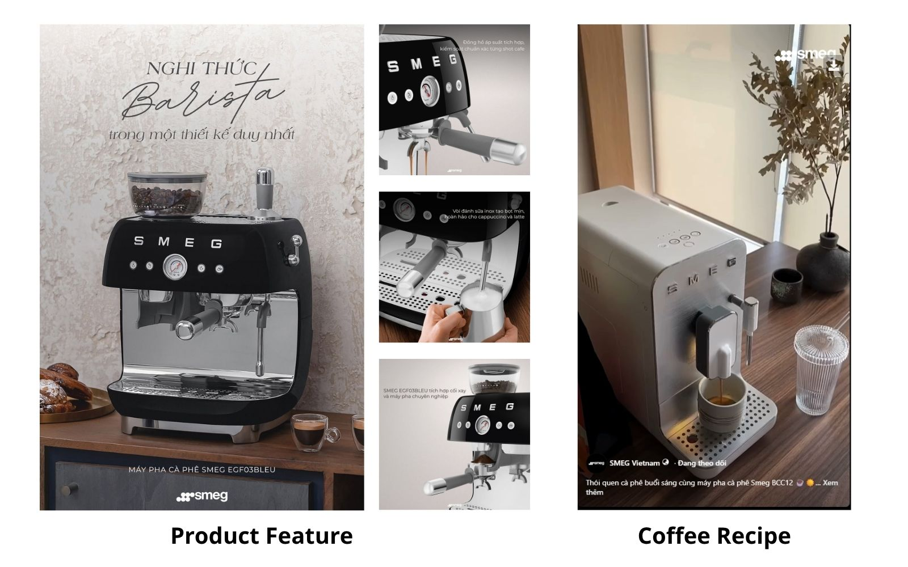
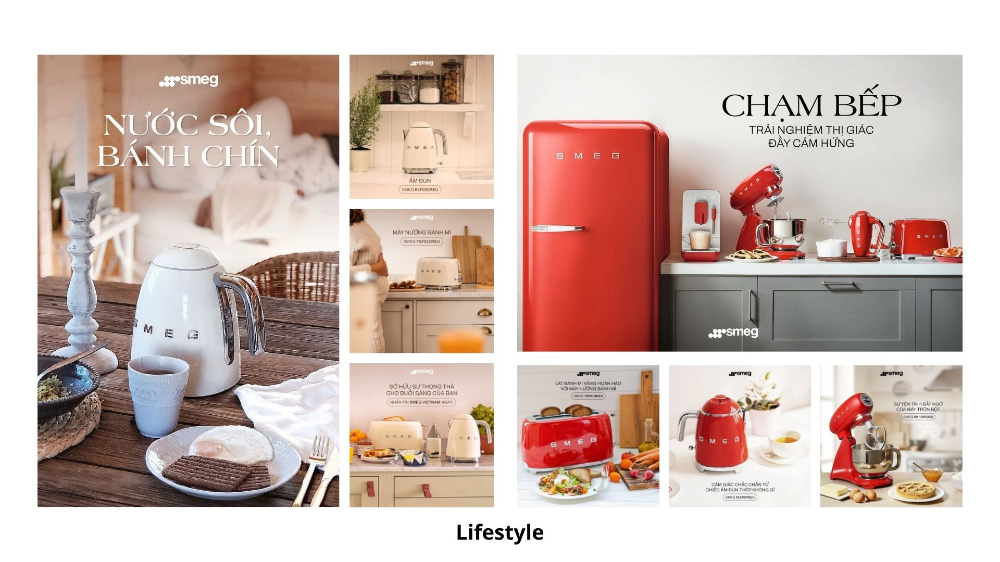
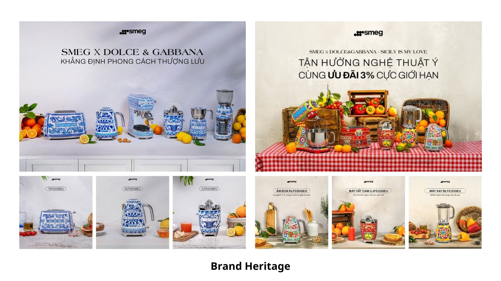

Quay lại danh sách dự án

CASE STUDY · SMEG VIETNAM · 2025–2026
Building SMEG Vietnam’s Digital Brand System
Digital Brand Building · 02/2025–05/2026
SMEG là thương hiệu thiết bị gia dụng cao cấp của Ý, nổi bật với sự kết hợp giữa công nghệ, thiết kế và phong cách sống. Tại Việt Nam, dự án tập trung xây dựng các kênh digital chính thức, phát triển hệ thống nội dung bản địa hóa và chuẩn hóa cách thương hiệu xuất hiện trên social media, website và e-commerce.
01 · PROJECT IMPACT
Xây nền tảng từ con số 0
Kết quả trong giai đoạn 02/2025–05/2026, đến từ sự kết hợp giữa organic content và paid media. Một nội dung gốc được điều chỉnh định dạng để phân phối trên Facebook và Instagram.
02 · CONTEXT & CHALLENGE
Từ hiện diện phân mảnh đến hệ thống thương hiệu
Cuối năm 2024 và đầu năm 2025, EPICURE VINA bắt đầu phát triển danh mục thiết bị gia dụng nhỏ SMEG tại Việt Nam. Thông tin sản phẩm khi đó chủ yếu xuất hiện trên hội nhóm, tài khoản bán hàng và các nguồn không chính thức.
- Hình ảnh và thông điệp chưa đồng bộ giữa các điểm chạm.
- Tài liệu Global chưa phản ánh rõ bối cảnh sử dụng của khách hàng Việt Nam.
- Nguồn hàng giữa các nhóm sản phẩm chưa ổn định, yêu cầu kế hoạch truyền thông linh hoạt theo từng giai đoạn.
03 · MY ROLE
Phạm vi phụ trách
- Lập kế hoạch truyền thông; đề xuất mục tiêu, KPIs, ngân sách và tỷ trọng nội dung.
- Nghiên cứu sản phẩm, xây dựng content pillars, content angles và nhóm sản phẩm ưu tiên.
- Bản địa hóa tài liệu SMEG Global cho social media, website và tài liệu bán hàng.
- Xây dựng creative brief và kiểm soát chất lượng hình ảnh, thiết kế, nội dung.
- Phối hợp Agency triển khai website; phụ trách nội dung, đăng tải sản phẩm và hỗ trợ guideline thiết kế.
- Phối hợp vận hành nội dung trên Facebook, Instagram, Shopee và TikTok Shop; theo dõi và báo cáo hiệu quả.
04 · STRATEGIC APPROACH
Bốn lựa chọn định hình hệ thống
One Brand System
Đồng bộ tone of voice, hình ảnh và cách trình bày sản phẩm giữa social media, website và e-commerce.
Global Consistency, Local Relevance
Duy trì tinh thần thiết kế của SMEG Global, đồng thời địa phương hóa thông điệp và bối cảnh sử dụng.
Phased Product Prioritization
Ưu tiên nhóm sản phẩm theo độ nhận diện, khả năng cung ứng và mục tiêu kinh doanh trong từng giai đoạn.
Lifestyle-led Content
Cân bằng nội dung tính năng với công thức, cảm hứng không gian sống và câu chuyện thiết kế.
05 · EXECUTION FRAMEWORK
Từ audit đến tối ưu
Rà soát kênh, nội dung, tài sản thương hiệu và danh mục sản phẩm.
Khởi tạo kênh, tone of voice, visual direction, content pillars và website.
Triển khai nội dung theo nhóm sản phẩm và bối cảnh sử dụng ưu tiên.
Kết hợp organic content và paid media để mở rộng độ phủ.
Điều chỉnh theo hiệu quả, nguồn hàng và mục tiêu kinh doanh.
06 · PRODUCT COMMUNICATION ROADMAP
Các giai đoạn ưu tiên xuyên suốt dự án
Roadmap là khung chiến lược linh hoạt, được tái sử dụng theo nguồn hàng, mùa vụ và mục tiêu kinh doanh; không giới hạn ở một tháng cụ thể.
Design Your Daily Ritual
Coffee, Kettle, Toaster, Citrus Juicer
Sản phẩm biểu tượng, dễ tạo nhận biết và gắn với thói quen hằng ngày.
The Italian Coffee Experience
Coffee Machine, Grinder, Food Preparation
Đào sâu product education và xây dựng hệ sinh thái cà phê tại nhà.
Expand the SMEG Lifestyle
Stand Mixer, Hand Blender, Breakfast Set, Coffee
Mở rộng danh mục và kết nối sản phẩm với nhu cầu nấu nướng, phong cách sống.
Festive Moments, Iconic Gifts
Coffee, Breakfast Set, Blender, Beverage Appliances
Khai thác nhu cầu quà tặng, phiên bản đặc biệt và các mùa mua sắm.
07 · TARGET CONTENT MIX
Cân bằng product education và brand building
Product & Design50%
Tính năng, lợi ích, bộ sưu tập và ứng dụng sản phẩm.
Lifestyle & Usage Inspiration30%
Không gian bếp, cảm hứng trang trí, lối sống và công thức.
Brand Heritage & Experience10%
Di sản thiết kế, nguồn gốc Ý, câu chuyện thương hiệu và giải thưởng.
Promotion & Commerce10%
Chương trình bán hàng, chính sách mua hàng và seasonal gifting.
08 · BRAND SYSTEM TRANSFORMATION
Từ hiện diện phân mảnh đến owned ecosystem





Các chỉ số Impact được ghi nhận tại mốc kết thúc dự án; ảnh chụp kênh dùng để minh họa hệ thống đã triển khai và có thể phản ánh mức tăng trưởng công khai ở thời điểm sau đó.
09 · SELECTED CONTENT EXECUTION
Hệ thống nội dung được triển khai



10 · RESULTS
Kết quả hệ thống
- Xây dựng Facebook và Instagram chính thức từ con số 0.
- Phát triển cộng đồng lên 10K+ Facebook followers và 9K Instagram followers.
- Duy trì trung bình ba nội dung gốc mỗi tuần trên hai nền tảng.
- Hoàn thiện content pillars, tone of voice và visual direction.
- Phối hợp đưa website và các điểm chạm e-commerce vào vận hành.
11 · KEY LEARNING
Ba bài học cốt lõi
Consistency builds premium perception. Giá trị cao cấp được hình thành từ sự nhất quán giữa hình ảnh, thông điệp và trải nghiệm trên mọi điểm chạm.
Localization goes beyond translation. Địa phương hóa là chuyển hóa giá trị Global thành tình huống sử dụng phù hợp với khách hàng Việt Nam.
Prioritization drives efficiency. Khi nguồn lực và nguồn hàng có giới hạn, ưu tiên đúng sản phẩm giúp truyền thông tập trung hơn.